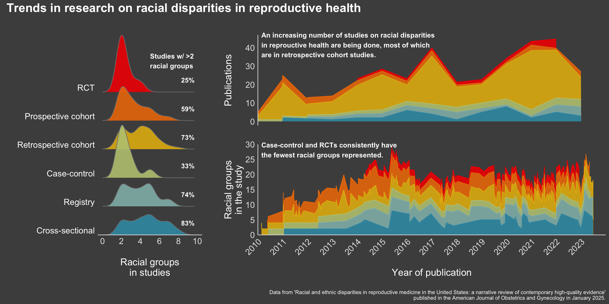

library(tidytuesdayR)
library(tidyverse)
library(renv)
library(styler)
library(ggridges)
library(colorspace)
library(wesanderson)
library(patchwork)
# setting ggplot theme
my_theme <- theme_classic() +
theme(
axis.title = element_text(size = 16, color = "white"),
axis.text = element_text(size = 14, color = "grey90"),
axis.line = element_line(color = "grey90"),
strip.text = element_text(size = 14),
plot.background = element_rect(
color = "grey30",
fill = "grey30"
),
panel.background = element_rect(
color = "grey30",
fill = "grey30"
)
)
theme_set(my_theme)This week’s dataset (2025-02-25)
This week’s tidytuesday included a published dataset from review article Racial and ethnic disparities in reproductive medicine in the United States: a narrative review of contemporary high-quality evidence published in the American Journal of Obstetrics and Gynecology in January 2025. Here’s what their README says:
What I hope to visualize
We know already that science has historically failed to enroll representative groups. And so, with this data I wanted to explore two things:
Are there differences in representation in racial groups across study types – that is, are we more likely to get better representation in cohort studies or clinical trials?
Are there changes in the magnitude of representation over time – have we seen improvements in cohort representatives over the years?
Data
article_dat <- read_csv('data/article_dat.csv') %>%
# combining month, day, year into date data
mutate(date = make_date(year, month, day),
# calculate total number of groups represented
n_races = rowSums(!is.na(select(., c(contains('race'),
-contains('_ss')))),
na.rm = TRUE),
# n_ethnicity = rowSums(!is.na(select(., c(contains('eth'),
# -contains('_ss')))),
# na.rm = TRUE),
# cleaning sudy type data
study_type = factor(if_else(study_type=='RCT',
study_type,
str_to_sentence(study_type)),
levels = c('Cross-sectional',
'Registry',
'Case-control',
'Retrospective cohort',
'Prospective cohort',
'RCT'))) %>%
# dropping any without study data or no race information
filter(!is.na(study_type),
n_races > 0)
# setting color palette based on number of study types
study_pal <- wes_palette(name='Zissou1',
n=length(unique(article_dat$study_type)),
type='continuous')article_dat %>%
dplyr::select(date, contains("race")) %>%
head()# A tibble: 6 × 18
date race1 race1_ss race2 race2_ss race3 race3_ss race4 race4_ss race5
<date> <chr> <dbl> <chr> <dbl> <chr> <dbl> <chr> <dbl> <chr>
1 2020-04-03 Black … 332 White 157 Hisp… 70 Asian 6 Other
2 2019-11-05 White … 1058 Amer… 37 Asian 228 Blac… 80 Hisp…
3 2019-07-05 Black 40 Hisp… 166 Non-… 144 Othe… 17 <NA>
4 2018-07-10 Non-Hi… 855 Non-… 28 Asian 43 Hisp… 34 <NA>
5 2018-07-10 White 78184 Black 8518 <NA> NA <NA> NA <NA>
6 2017-05-29 White -99 Black -99 Amer… -99 Asia… -99 <NA>
# ℹ 8 more variables: race5_ss <dbl>, race6 <chr>, race6_ss <dbl>, race7 <chr>,
# race7_ss <dbl>, race8 <chr>, race8_ss <dbl>, n_races <dbl>Making panels for figure
I’m going to be using:
geom_density_ridges()from the {ggridges} library to visualize the distribution of representation across study typesgeom_area()from the {ggplot2} library to visualizes changes in numbers of publications and representation over time and study types
# setting ridge overlap
ridge_overlap <- 2
p1 <- article_dat %>%
ggplot(aes(x=n_races, y=study_type, fill=study_type)) +
geom_density_ridges(alpha=0.9,
scale=ridge_overlap,
color = 'grey50') +
scale_fill_manual(values=study_pal) +
labs(y='',
x='Racial groups\nin studies') +
theme(legend.position = 'none',
axis.line.y = element_blank(),
axis.ticks = element_blank(),
axis.text.y = element_text(vjust=-0.25,
color = "white")
)+
scale_x_continuous(breaks=seq(0, 10, by=2),
limits=c(0, 10),
expand=c(0, 0.5)) +
scale_y_discrete(expand = c(0.00, 0))
# Calculating % that have > 2 racial groups in their studies
sum_dat <- article_dat %>%
group_by(study_type) %>%
summarize(n_more_2=sum(n_races >2),
total = n(),
pct=paste0(round(100*n_more_2/total), '%')) %>%
mutate(x=rep(9, times=6))
# adding to figure
p1 <- p1 + geom_text(data=sum_dat,
mapping = aes(x=x,
y=study_type,
label = pct),
inherit.aes=F,
color ='white',
vjust=-2,
fontface = 'bold'
)p2 <- article_dat %>%
group_by(study_type, year) %>%
tally() %>%
mutate(
year_mo = make_date(year),
study_type = factor(study_type, levels = rev(levels(article_dat$study_type)))) %>%
ggplot(aes(x=year_mo, y = n, fill = study_type, color = study_type)) +
geom_area(alpha = 0.9, position = "stack") +
theme(
legend.position = "none",
axis.text.x = element_blank(),
axis.line.x = element_blank(),
axis.title.x=element_blank(),
strip.placement = "outside",
axis.ticks = element_blank(),
plot.margin = margin(1, 0, 0, 0.5, "cm")
) +
labs(
x = "\nYear of publication", y = "\nPublications",
color = "", fill = ""
) +
scale_fill_manual(values = rev(study_pal)) +
scale_color_manual(values = rev(study_pal)) +
scale_x_date(
date_breaks = "1 years",
date_labels = "%Y",
expand = c(0, 0),
limits = c(
as.Date("2010-01-01"),
as.Date("2023-12-31")
)
) +
guides(fill = guide_legend(ncol = 3))p3 <- article_dat %>%
mutate(study_type = factor(study_type, levels = rev(levels(article_dat$study_type)))) %>%
ggplot(aes(
x = date,
y = n_races,
fill = study_type,
color = study_type,
)) +
geom_area(alpha = 0.9, position = "stack") +
theme(
legend.position = "none",
axis.text.x = element_text(angle = 45, hjust = 1),
strip.placement = "outside",
axis.ticks = element_blank(),
plot.margin = margin(1, 0, 0, 0.5, "cm")
) +
labs(
x = "\nYear of publication", y = "\nRacial groups\nin the study",
color = "", fill = ""
) +
scale_fill_manual(values = rev(study_pal)) +
scale_color_manual(values = rev(study_pal)) +
scale_y_continuous(
breaks = seq(0, 30, by = 5),
expand = c(0, 0),
limits = c(0, 30)
) +
scale_x_date(
date_breaks = "1 years",
date_labels = "%Y",
expand = c(0, 0),
limits = c(
as.Date("2010-01-01"),
as.Date("2023-12-31")
)
) +
guides(fill = guide_legend(ncol = 3))Combining for final figure
Library {patchwork} comes in handy here!
fig <- (p1 | (p2/p3)) +
plot_annotation(
title = "Trends in research on racial disparities in reproductive health",
caption = "\nData from 'Racial and ethnic disparities in reproductive medicine in the United States: a narrative review of contemporary high-quality evidence'\npublished in the American Journal of Obstetrics and Gynecology in January 2025.",
theme = list(
plot.title = element_text(size = 20, face = "bold", color = "white"),
plot.caption = element_text(color = "white")
)
) +
plot_layout(
widths = c(0.75, 2.5)
)Making some labels to annotate the text – I recently learned about inset_element() from the {patchwork} library – nice for adding text to a already patchworked figure.
label1 <- ggplot() +
annotate("text",
x = 1,
y = 5,
size=4,
fontface = 'bold',
label = "Studies w/ >2\nracial groups",
hjust=0,
color = 'white',
) +
coord_cartesian(clip = "off") +
theme_void()
label2 <- ggplot() +
annotate("text",
x = 1,
y = 5,
size=4,
fontface = 'bold',
label = "An increasing number of studies on racial disparities\nin reprouctive health are being done, most of which\nare in retrospective cohort studies.",
hjust=0,
color = 'white',
) +
coord_cartesian(clip = "off") +
theme_void()
label3 <- ggplot() +
annotate("text",
x = 1,
y = 5,
size=4,
fontface = 'bold',
label = "Case-control and RCTs consistently have\nthe fewest racial groups represented.",
hjust=0,
color = 'white',
) +
coord_cartesian(clip = "off") +
theme_void()
# adding labels
final_fig <- fig +
inset_element(label1,
left = -0.31,
top = 0.87,
bottom = 0.87,
right = -0.31) +
inset_element(label2,
left = 0.01,
top = 1,
bottom = 0.9,
right = 0.01) +
inset_element(label3,
left = 0.01,
top = 0.45,
bottom = 0.4,
right = 0.01) final_fig
Citation
BibTeX citation:
@online{graves2025,
author = {Graves, Jess},
title = {TidyTuesday: {Racial} Disparities in Reproductive Research},
date = {2025-02-26},
url = {https://JessLGraves.github.io/posts/2025-02-26-tidytuesday/},
langid = {en}
}
For attribution, please cite this work as:
Graves, Jess. 2025. “TidyTuesday: Racial Disparities in
Reproductive Research.” February 26, 2025. https://JessLGraves.github.io/posts/2025-02-26-tidytuesday/.